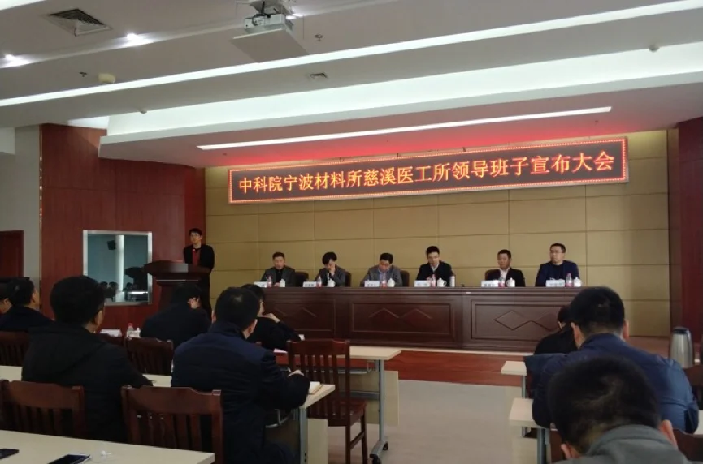
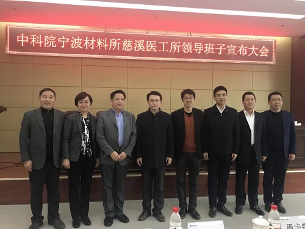
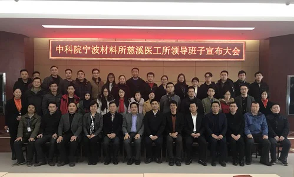

12月27日下午，宁波材料所所属二级慈溪医工所领导班子宣布大会在慈溪智慧谷召开。会议由中科院宁波材料所副所长郑剑主持，慈溪市副市长周阳，科技局局长霍建君，市委组织部副部长华建清，市委组织部人才办周宇锡，宁波材料所所长黄政仁，党委副书记（主持工作）、副所长张瑞丽，以及慈溪医工所全体员工与学生代表参加了大会。
张瑞丽宣读了首届领导班子聘任决议，刘江任慈溪医工所首任所长，付俊任副所长。为积极推进慈溪医工所新园区建设，园区建设工作小组同时成立，郑剑任组长，刘江任副组长，付俊、倪浩明任小组成员。
刘江随即发表就职感言，首先感谢宁波材料所与慈溪市政府的大力支持，随后进一步阐述未来的工作重心：凝练准科研精神与理念，实施创新的管理原则，规划好科研团队和组织布局制定人才队伍的引进和培养方案，做顶天的科研和立地的转化。最后刘江表示，未来将不忘初心，不辱使命，一同努力，打造一个全新而焕发活力的医工所。付俊随后发表了就职感言，在感言中他回顾了慈溪医工所的筹建历程，表示将配合所长做好支撑辅助工作。
周阳代表慈溪市人民政府讲话，他首先肯定了宁波材料所及医工所全体成员在过去做出的贡献,对宁波材料所的大力支持表示感谢。他希望未来慈溪医工所能够充分结合慈溪产业业态，加强产学研合作，更好地服务慈溪地区经济发展。他表示，慈溪医工所已经正式启航，慈溪市政府政府未来将继续支持医工所的各项工作，营造最有利的环境，让广大科研人员“把家安在这里，把心留在这里”。
黄政仁代表宁波材料所发表讲话。他感谢了慈溪市政府对医工所建设的高度重视和大力支持，对新任领导班子表示了祝贺。黄政仁提到，慈溪医工所已经翻开了新的篇章，新一届领导班子和全体医工所人要不忘自己的责任和使命，不断开拓进取，为地方的人才引进搭建更好的平台，为地方产业发展提供更优的技术支持。



（慈溪医工所 王浩 邵筱琦)